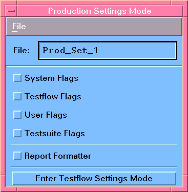

Using Production Settings
For a user with engineering status the Production Settings button is available in the Operation Control window (see Starting SmarTest with engineer mode). This button brings up a dialog box that contains buttons to access all SmarTest flags (see Accessing Testflow Settings). Clicking Enter Production Settings Mode displays the screen shown below.

In Production Settings Mode, the same flags are available (as described in Accessing Testflow Settings), but you can change their values and store them in Production Settings files.
Production Settings enable you to apply a particular focus for test execution and for the evaluation and logging of result information. You can quickly change the focus for production pass/fail testing vs. engineering characterization by just using another set of Production Settings.
When defining a workorder, you can specify a Production Settings file (seeEditing Workorders). In this case, the file gets loaded during production and overwrites the flags saved in the testflow file.
Changing the flags in Production Settings mode has no effect on the flags that were set in testflow settings mode (see Accessing Testflow Settings) or within the Test Flow Editor in the development environment.
The following sections describe how to create new Production Settings and how to merge existing settings from either Testflow or Production Setting files. Moreover, the File Menu of the Production Settings Mode window provides functions for loading and deleting Production Settings files.